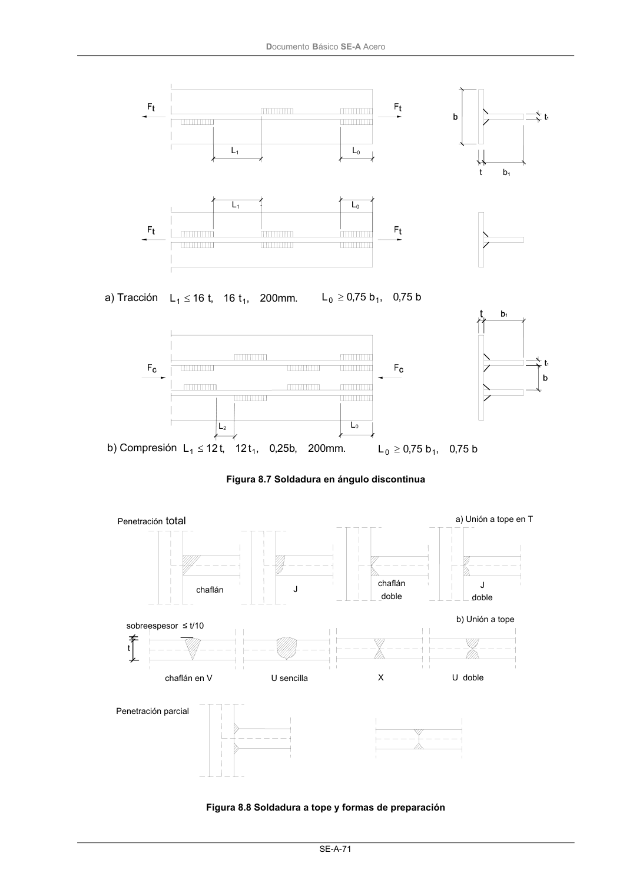

DB-SE-A Acero · edición 2007-10-23 · capa oficial
Documento DB-SE-A-oficial · SHA-256 del PDF 9ed9ea694aabfbda3bfbbef40dfe9223fde05d13c35bc2ba9751e5a96a22a64f
Página física 73 de 168.
Copia fiel del PDF fuente · Fuente oficial
Ficha de la disposición en la fuente oficial
Formato: Texto de la página (Markdown)
Documento Básico SE-A Acero SE-A-71 Figura 8.7 Soldadura en ángulo discontinua Figura 8.8 Soldadura a tope y formas de preparación b 75 ,0 , b 75 ,0 L 1 0 ≥ L1 L1 . mm 200 , t 16 ,t 16 L 1 1 ≤ L0 L0 L0 L2 a) Tracción b) Compresión t b1 b 75 ,0 , b 75 ,0 L 1 0 ≥ . mm 200 ,b 25 ,0 , t 12 ,t 12 L 1 1 ≤ chaflán chaflán doble J J doble chaflán en V U sencilla U doble X Penetración parcial Penetración total a) Unión a tope en T b) Unión a tope t sobreespesor ≤ t/10

Datos candidatos: compruebe celdas y notas en el PDF.